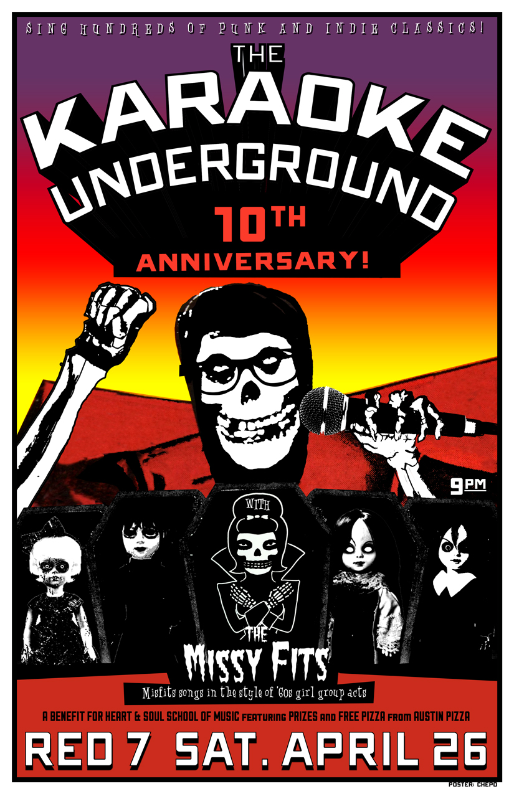

April 26th at 9p
Red 7
$8 free-will donation to benefit Heart & Soul School of Music!
Free pizza from Austin’s Pizza!
The MissyFits @ 9! KU co-founder Hannah Ford and four other amazing women perform Misfits songs in the style of ’60s girl group acts. Karaoke starts immediately after The Missyfits!
Raffle tickets will be $1 for 1, $5 for 7, and $10 for an arm’s length (arm in question to be determined by ticket seller). In addition to the prizes below, we’ll have t-shirts, buttons and other merch for sale from KU, The MissyFits and Heart & Soul School of Music!
A Ladies Rock Camp scholarship from Girls Rock Camp Austin
A Karaoke Underground house party
Transmission tickets:
– Chuck Ragan – 5/5 at Mohawk
– Trans Am + Survive – 5/31at Red 7
– The Mountain Goats – 6/22 at Mohawk
C3 tickets:
– ONE: The Only Tribute to Metallica – 5/8 at Stubb’s
– Cheap Trick – 5/16 at Emo’s
– Jimmy Eat World – 5/18 at Stubb’s
Gift Basket donated by Novela Jewelry & Accessories
$30 gift certificate from Jennifer Cunningham’s Etsy store
$50 gift certificate from Austin’s Pizza
Hey Cupcake! gift cards
Karaoke Underground T-shirt
Tom Tom magazine